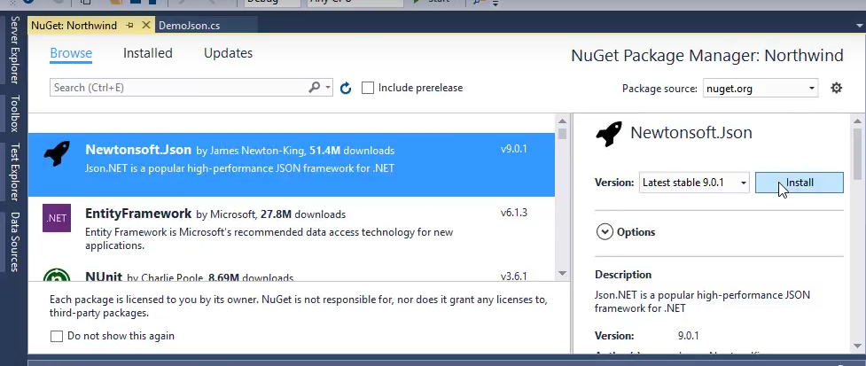

Saving an Object to JSON
We'll use the "Newtonsoft.Json" library to read and write json data.
We'll download it and add it to our project using NuGet. (NuGet is an easy way to download, and reference a 3rd part component - it downloads it and takes care of all the basic configuration)
Add a "NuGen Package" by right clicking on "Northwind" and choose "Manage NuGet Packages..."

We'll search for "Newtonsoft.Json" and Install it
To use the previews Demo code we used for XML, we'll change the
GetOrderandUpdateOrdermethods in theDemoclass topublic static
class Demo
{
public static OrderPoco GetOrderPoco(int orderId)
{
...
}
public static void UpdateOrder(OrderPoco o)
{
...
}
} - Add
using Newtonsoft.Json; - Save Json data to string
var o = Demo.GetOrderPoco(10249);
var s = JsonConvert.SerializeObject(o); - Save the string to a file
var o = Demo.GetOrderPoco(10249);
var s = JsonConvert.SerializeObject(o);
System.IO.File.WriteAllText(@"c:\temp\order.json", s); Help us improve, Edit this page on GitHub
or email us at info@fireflymigration.com